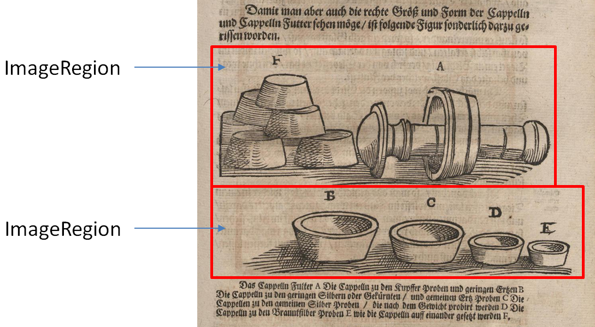
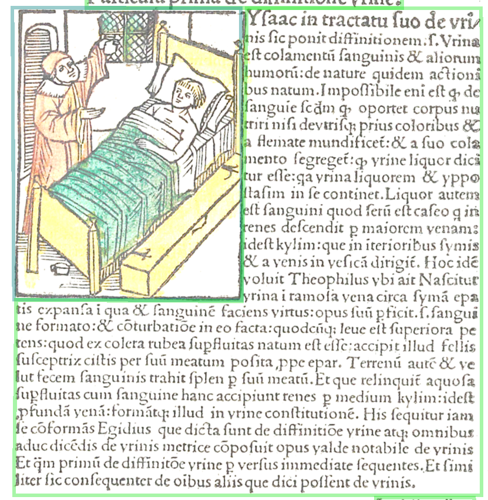

Illustrations, photos (ImageRegion) An ImageRegion is assigned to an image which can be a photograph, a painting or a drawing. Figure 1. Example for ImageRegion: Picture of single Capelles (small bowls)  Figure 2. polygon segments, source: Pinder, Ulrich: Epyphani medicorum, [Nürnberg], 1506.. Permalink: http://resolver.staatsbibliothek-berlin.de/SBB0001C4CF00000009  Parent topic: Second Step: Page RegionsRelated informationComplex Type pc:ImageRegionType